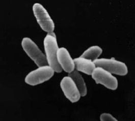

Архе́и (лат. Archaea от др.-греч. ἀρχαῖος «извечный, древний, первозданный, старый») — домен живых организмов (по трёхдоменной системе Карла Вёзе наряду с бактериями и эукариотами). Археи представляют собой одноклеточные микроорганизмы, не имеющие ядра, а также каких-либо мембранных органелл. Ранее археи объединяли с бактериями в общую группу, называемую прокариоты (или царство Дробянки (лат. Monera)), и они назывались архебактерии, однако сейчас такая классификация считается устаревшей[1]: установлено, что археи имеют свою независимую эволюционную историю и характеризуются многими биохимическими особенностями, отличающими их от других форм жизни. В настоящее время археи подразделяют на более чем 5 типов. Из этих групп наиболее изученными являются кренархеоты (лат. Crenarchaeota) и эвриархеоты (лат. Euryarchaeota). Классифицировать археи по-прежнему сложно, так как подавляющее большинство из них никогда не выращивались в лабораторных условиях и были идентифицированы только по анализу нуклеиновых кислот из проб, полученных из мест их обитания. Археи и бактерии очень похожи по размеру и форме клеток, хотя некоторые археи имеют довольно необычную форму, например, клетки Haloquadratum walsbyi[en] плоские и квадратные. Несмотря на внешнее сходство с бактериями, некоторые гены и метаболические пути архей сближают их с эукариотами (в частности ферменты, катализирующие процессы транскрипции и трансляции). Другие аспекты биохимии архей являются уникальными, к примеру, присутствие в клеточных мембранах липидов, содержащих простую эфирную связь. Большая часть архей — хемоавтотрофы. Они используют значительно больше источников энергии, чем эукариоты: начиная от обыкновенных органических соединений, таких как сахара, и заканчивая аммиаком, ионами металлов и даже водородом. Солеустойчивые археи — галоархеи (лат. Haloarchaea) — используют в качестве источника энергии солнечный свет, другие виды архей фиксируют углерод, однако, в отличие от растений и цианобактерий (синезелёных водорослей), ни один вид архей не делает и то, и другое одновременно. Размножение у архей бесполое: бинарное деление, фрагментация и почкование. В отличие от бактерий и эукариот, ни один известный вид архей не формирует спор. Изначально архей считали экстремофилами, живущими в суровых условиях — горячих источниках, солёных озёрах, однако потом они были обнаружены в самых различных местах, включая почву, океаны, болота и толстую кишку человека. Архей особенно много в океанах, и, возможно, планктонные археи являются самой многочисленной группой ныне живущих организмов. В наше время археи признаны важной составляющей жизни на Земле. Они играют роль в круговоротах углерода и азота. Ни один из известных представителей архей не является ни паразитом, ни патогенным организмом, однако они часто бывают мутуалистами и комменсалами. Некоторые представители являются метаногенами и обитают в пищеварительном тракте человека и жвачных, где они помогают осуществлять пищеварение. Метаногены используются в производстве биогаза и при очистке канализационных сточных вод, а ферменты экстремофильных микроорганизмов, сохраняющие активность при высоких температурах и в контакте с органическими растворителями, находят своё применение в биотехнологии.